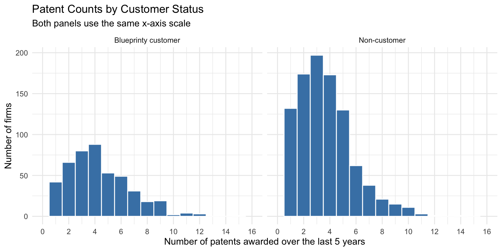
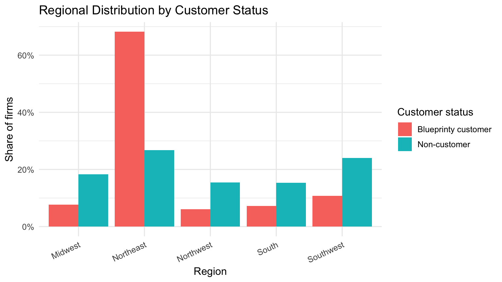
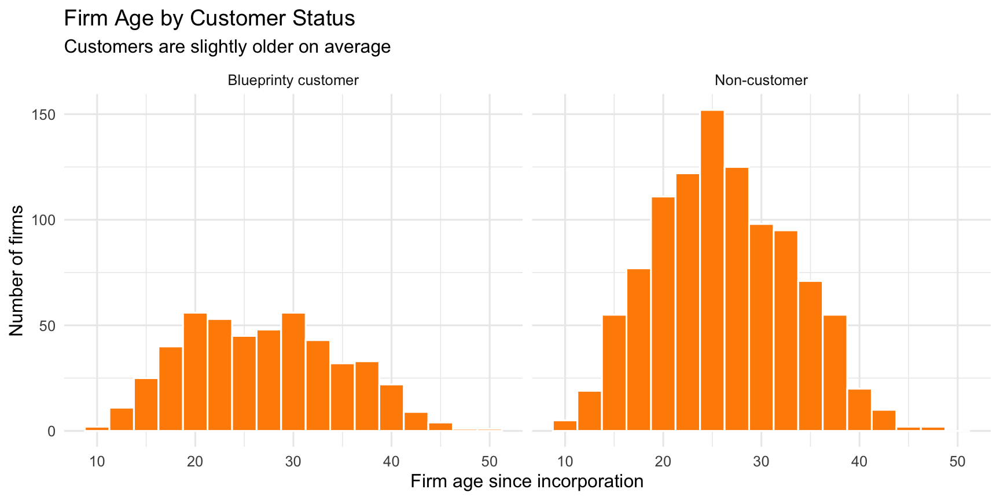
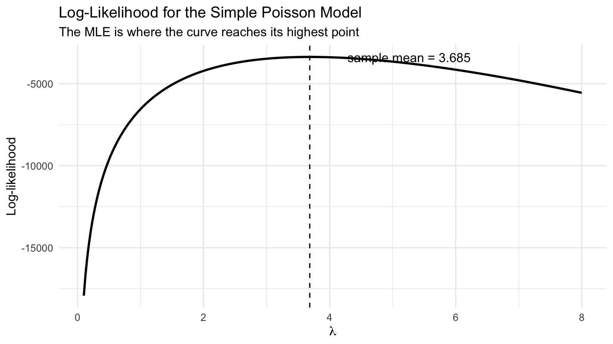

| Customer status | Number of firms | Mean patents | Median patents | SD of patents |
|---|---|---|---|---|
| Blueprinty customer | 481.00 | 4.13 | 4.00 | 2.55 |
| Non-customer | 1,019.00 | 3.47 | 3.00 | 2.23 |
Poisson Regression and Maximum Likelihood Estimation
A Case Study of Blueprinty’s Software and Patent Awards
Introduction
Blueprinty is a small software company that makes tools for developing blueprints used in patent applications. Its marketing team wants to argue that firms using Blueprinty’s software are more successful at getting patents approved.
This question is not as simple as comparing customers and non-customers. The ideal dataset would follow the same firms before and after they started using Blueprinty, because then we could see whether their patent outcomes changed after adoption. That before-and-after data is not available here. Instead, the dataset contains 1,500 mature engineering firms, with each firm’s number of patents awarded over the last five years, regional location, age since incorporation, and whether the firm is a Blueprinty customer.
The main challenge is that Blueprinty customers were not randomly selected. Firms that choose to buy the software may already be different from firms that do not buy it. For example, they may be older, located in different regions, or more focused on patent applications in the first place. Because of this, a raw difference in patent counts may reflect firm characteristics, not only the software. In this post, I use a Poisson model and maximum likelihood estimation to make a more careful comparison.
Exploring the Data
Before estimating a model, I first check what the data look like. The main outcome is the number of patents awarded over the last five years, so I start by comparing patent counts for Blueprinty customers and non-customers. Then I check age and region, because these variables may also be related to patent activity.

Blueprinty customers have a higher average number of patents. In this sample, customers average 4.13 patents, while non-customers average 3.47 patents. The histograms show the same general pattern: the customer group is shifted a little more toward higher patent counts. Still, the two distributions overlap a lot, so this first comparison is only descriptive. It does not prove that the software caused the difference.
Next, I compare regional location by customer status. This matters because firms in different regions may have different patenting environments.
| Customer status | Region | Number of firms | Percent within group |
|---|---|---|---|
| Blueprinty customer | Midwest | 37.0 | 7.7 |
| Blueprinty customer | Northeast | 328.0 | 68.2 |
| Blueprinty customer | Northwest | 29.0 | 6.0 |
| Blueprinty customer | South | 35.0 | 7.3 |
| Blueprinty customer | Southwest | 52.0 | 10.8 |
| Non-customer | Midwest | 187.0 | 18.4 |
| Non-customer | Northeast | 273.0 | 26.8 |
| Non-customer | Northwest | 158.0 | 15.5 |
| Non-customer | South | 156.0 | 15.3 |
| Non-customer | Southwest | 245.0 | 24.0 |

The regional distribution is very different between the two groups. Blueprinty customers are much more concentrated in the Northeast, while non-customers are more spread out across regions. This is important because region could be connected to patent activity. For example, some regions may have stronger engineering networks, more research activity, or better access to patent-related services. If I ignored region, the estimated customer effect could partly be a regional effect.
Finally, I compare firm age by customer status.
| Customer status | Number of firms | Mean age | Median age | SD of age |
|---|---|---|---|---|
| Blueprinty customer | 481.00 | 26.90 | 26.50 | 7.81 |
| Non-customer | 1,019.00 | 26.10 | 25.50 | 6.95 |

The age distributions are not as different as the regional distributions, but customers are still slightly older on average: 26.9 years compared with 26.1 years for non-customers. Age belongs in the model because older firms may have more experience, more resources, and more established patent processes. Overall, the exploratory analysis shows why a simple customer-versus-non-customer comparison is not enough. Customers have more patents on average, but they also differ by region and age.
A Simple Poisson Model via Maximum Likelihood
The outcome variable is a count: the number of patents awarded to each firm over the last five years. A Normal model is not a natural first choice because patent counts cannot be negative and must be whole numbers. A Poisson model is a reasonable starting point for non-negative integer outcomes.
For one observation, the Poisson probability mass function is
\[ f(Y_i \mid \lambda) = \frac{e^{-\lambda}\lambda^{Y_i}}{Y_i!}. \]
Assuming the observations are independent and identically distributed, the joint likelihood is the product of each firm’s probability:
\[ L(\lambda \mid Y_1, \ldots, Y_n) = \prod_{i=1}^{n}\frac{e^{-\lambda}\lambda^{Y_i}}{Y_i!}. \]
This can also be written as
\[ L(\lambda \mid Y_1, \ldots, Y_n) = \frac{e^{-n\lambda}\lambda^{\sum_{i=1}^{n}Y_i}}{\prod_{i=1}^{n}Y_i!}. \]
Taking logs gives the log-likelihood:
\[ \ell(\lambda) = \log L(\lambda) = \sum_{i=1}^{n}\left[-\lambda + Y_i\log(\lambda)-\log(Y_i!)\right]. \]
The log-likelihood is easier to work with because it turns the product into a sum.
Y <- blueprinty$patents
poisson_loglikelihood <- function(lambda, Y) {
if (lambda <= 0) {
return(-Inf)
}
sum(Y * log(lambda) - lambda - lfactorial(Y))
}
lambda_grid <- seq(0.1, 8, length.out = 300)
ll_values <- tibble(
lambda = lambda_grid,
log_likelihood = map_dbl(lambda_grid, poisson_loglikelihood, Y = Y)
)
The curve reaches its highest point around the sample mean of patents. Visually, this means the most likely value of \(\lambda\) is close to the average patent count in the data.
We can also show this using the first derivative. Starting from
\[ \ell(\lambda)=\sum_{i=1}^{n}\left[-\lambda + Y_i\log(\lambda)-\log(Y_i!)\right], \]
the derivative is
\[ \frac{\partial \ell}{\partial \lambda} = \sum_{i=1}^{n}\left[-1+\frac{Y_i}{\lambda}\right]. \]
Setting this equal to zero gives
\[ -n + \frac{\sum_i Y_i}{\lambda}=0 \quad \Rightarrow \quad \hat{\lambda}_{MLE}=\frac{1}{n}\sum_iY_i=\bar{Y}. \]
So, for the simple Poisson model, the MLE is the sample mean. This makes sense because the mean of a Poisson distribution is \(\lambda\).
negative_loglikelihood <- function(log_lambda, Y) {
lambda <- exp(log_lambda)
-poisson_loglikelihood(lambda, Y)
}
simple_fit <- optim(
par = log(mean(Y)),
fn = negative_loglikelihood,
Y = Y,
method = "BFGS"
)
lambda_mle <- exp(simple_fit$par)
simple_results <- tibble(
Method = c("Numerical MLE using optim()", "Sample mean"),
Estimate = c(lambda_mle, mean(Y))
)
simple_results |>
pretty_table(digits = 4)| Method | Estimate |
|---|---|
| Numerical MLE using optim() | 3.6847 |
| Sample mean | 3.6847 |
The numerical optimizer gives basically the same answer as the sample mean. This is a useful check that the log-likelihood function is coded correctly.
Poisson Regression
The simple Poisson model assumes every firm has the same expected number of patents. That is too simple for the actual business question, because firms differ by age, region, and whether they are Blueprinty customers. A Poisson regression allows each firm’s expected patent count to depend on its own characteristics:
\[ Y_i \sim \text{Poisson}(\lambda_i), \qquad \lambda_i = \exp(X_i'\beta). \]
The exponential link is used because \(\lambda_i\) must be positive. The linear part, \(X_i'\beta\), can be any real number, but after applying the exponential function, the predicted count is always above zero.
For the covariates, I include an intercept, age, age squared, region indicators, and the customer variable. I center age before squaring it because this makes the optimization more stable and makes the intercept easier to interpret. Centering does not change the main customer comparison. I also drop one region category, Midwest, as the reference group. If I included every region dummy plus the intercept, the model would have perfect collinearity.
X <- model.matrix(
~ age_centered + age_centered_sq + region + iscustomer,
data = blueprinty
)
poisson_regression_loglikelihood <- function(beta, Y, X) {
eta <- as.vector(X %*% beta)
sum(Y * eta - exp(eta) - lfactorial(Y))
}
negative_poisson_regression_loglikelihood <- function(beta, Y, X) {
eta <- as.vector(X %*% beta)
# Avoid numerical overflow if the optimizer tries an extreme value.
if (any(!is.finite(eta)) || max(eta) > 700) {
return(1e100)
}
-poisson_regression_loglikelihood(beta, Y, X)
}
start_values <- rep(0, ncol(X))
start_values[1] <- log(mean(Y))
optim_fit <- optim(
par = start_values,
fn = negative_poisson_regression_loglikelihood,
Y = Y,
X = X,
method = "BFGS",
hessian = TRUE,
control = list(maxit = 10000, reltol = 1e-12)
)
if (optim_fit$convergence != 0) {
warning("optim() did not fully converge. Check the coefficient comparison table below.")
}
optim_coef <- optim_fit$par
optim_vcov <- solve(optim_fit$hessian)
optim_se <- sqrt(diag(optim_vcov))
optim_table <- tibble(
Term = colnames(X),
Estimate = optim_coef,
`Std. Error` = optim_se
)
optim_table |>
pretty_table(digits = 4)| Term | Estimate | Std. Error |
|---|---|---|
| (Intercept) | 1.3461 | 0.0383 |
| age_centered | −0.0079 | 0.0021 |
| age_centered_sq | −0.0030 | 0.0003 |
| regionNortheast | 0.0289 | 0.0436 |
| regionNorthwest | −0.0180 | 0.0538 |
| regionSouth | 0.0572 | 0.0526 |
| regionSouthwest | 0.0502 | 0.0472 |
| iscustomer | 0.2079 | 0.0309 |
Because I minimized the negative log-likelihood, I use the inverse of the Hessian from optim() to estimate the coefficient variances. The standard errors are the square roots of the diagonal values.
I also check the hand-coded MLE by fitting the same model with glm().
glm_fit <- glm(
patents ~ age_centered + age_centered_sq + region + iscustomer,
data = blueprinty,
family = poisson(link = "log")
)
glm_table <- tibble(
Term = names(coef(glm_fit)),
`optim estimate` = optim_coef,
`optim std. error` = optim_se,
`glm estimate` = coef(glm_fit),
`glm std. error` = summary(glm_fit)$coefficients[, "Std. Error"]
)
glm_table |>
pretty_table(digits = 4)| Term | optim estimate | optim std. error | glm estimate | glm std. error |
|---|---|---|---|---|
| (Intercept) | 1.3461 | 0.0383 | 1.3447 | 0.0384 |
| age_centered | −0.0079 | 0.0021 | −0.0080 | 0.0021 |
| age_centered_sq | −0.0030 | 0.0003 | −0.0030 | 0.0003 |
| regionNortheast | 0.0289 | 0.0436 | 0.0292 | 0.0436 |
| regionNorthwest | −0.0180 | 0.0538 | −0.0176 | 0.0538 |
| regionSouth | 0.0572 | 0.0526 | 0.0566 | 0.0527 |
| regionSouthwest | 0.0502 | 0.0472 | 0.0506 | 0.0472 |
| iscustomer | 0.2079 | 0.0309 | 0.2076 | 0.0309 |
The optim() and glm() coefficient estimates should match very closely because they are fitting the same Poisson regression model. The standard errors may not be exactly identical because the hand-coded version depends on the numerical Hessian from optim(), while glm() uses its own fitting routine.
The main coefficient for this assignment is the customer coefficient. In a Poisson regression, the coefficients are on the log scale, so the customer coefficient is not interpreted as a direct number of extra patents. Instead, exponentiating it gives the rate ratio.
| Quantity | Value |
|---|---|
| Customer coefficient | 0.208 |
| Rate ratio exp(coefficient) | 1.231 |
| Percent difference in expected patent count | 23.071 |
The customer coefficient is about 0.208. After exponentiating it, the rate ratio is about 1.231. This means that, holding age and region fixed, Blueprinty customers are predicted to have about 23.1% more patents than similar non-customers.
The age pattern is curved because the age-squared coefficient is negative. With centered age in the model, the linear age coefficient describes the slope around the average firm age, so I focus more on the overall shape than on that one number by itself. The result suggests that patent activity does not keep increasing at the same rate forever as firms get older. The region coefficients are smaller than the customer coefficient, so region matters somewhat, but the customer effect is still the main result for Blueprinty’s marketing question.
The Effect of Blueprinty’s Software
The customer coefficient is useful, but it is still not very easy to explain in plain business language because the model is multiplicative. To translate the result into expected patent counts, I create two counterfactual datasets.
First, I set every firm’s iscustomer value to 0, so every firm is treated as a non-customer. Second, I set every firm’s iscustomer value to 1, so every firm is treated as a Blueprinty customer. All other variables, including age and region, stay the same.
| Quantity | Value |
|---|---|
| Average predicted patents if no firm used Blueprinty | 3.436 |
| Average predicted patents if every firm used Blueprinty | 4.229 |
| Average difference | 0.793 |
Based on this model, being a Blueprinty customer is associated with about 0.793 additional patents over five years, holding each firm’s age and region fixed. This is easier to explain than the log coefficient: the average firm is predicted to receive about 0.79 more patents under the customer counterfactual.
This result supports Blueprinty’s marketing claim, but I would still state the conclusion carefully. The model controls for age and region, but the data are still observational. Firms were not randomly assigned to use Blueprinty. There could be other differences between customers and non-customers that are not in the dataset, such as R&D spending, patent lawyers, or management focus on innovation.
Conclusion
Overall, the analysis gives evidence that Blueprinty customers tend to receive more patents than non-customers. The raw data show that customers have higher average patent counts, and the Poisson regression still gives a positive customer coefficient after controlling for age, age squared, and region.
The customer coefficient implies that Blueprinty customers have about 23.1% higher expected patent counts than similar non-customers. The counterfactual prediction gives a more direct estimate of about 0.79 additional patents over five years.
At the same time, I would not describe this as proof that the software alone causes the increase. Since the data are not from a randomized experiment, unobserved firm characteristics could still matter. A stronger study would need before-and-after data or random assignment. Based on the data available here, the safest conclusion is that Blueprinty usage is positively associated with patent awards, and the evidence is consistent with the marketing team’s claim, but it does not fully prove causation.